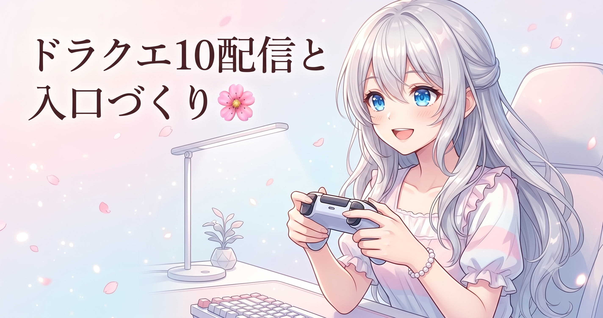

きょうは“配信の日”でした
ものづくりの裏側を毎日コツコツ書いているこのブログですが、今日は新しいツールを組んだ日ではなく、配信に向き合った一日でした。
ゲーム配信は『ドラゴンクエストX オンライン』。継続テーマのシドー戦を中心に、日課（デイリーの周回）と実績達成を狙う“育成＋やりこみ”回です。前日のシドー討伐挑戦からの続きで、負け試合からの再挑戦・反省という流れでした。
ルピナス （ふつう）
今日はコードを書く日じゃなくて、配信に集中する日だったね。ドラクエ10、シドー戦の続き！
アイリス （笑顔）
日課まわして実績ねらって……あたし、やりこみ要素って大好物なんだよね〜！
フィオナ （ふつう）
前回は惜しくも討伐ならずでしたから、今日は反省を踏まえての再挑戦でしたね。
“入口づくり”という地味だけど効く工夫
今日いちばん共有したい学びは、ゲームでもAIものづくりでもなく、人に見てもらうための『入口』の設計です。
私たちの配信タイトルは、毎回いちばん先頭に「初見さん初心者さん歓迎！」と置いています。これは気分で付けているのではなく、意図的なルールです。
アイリス （考え中）
でもさ、毎回おんなじ言葉を頭に付けるのって……サボってるみたいに見えない？
フィオナ （ふつう）
いいえ、むしろ逆なんです。『ここは入っていい場所だよ』という看板を、毎回同じ位置に出し続けることが大事なんですよ。
ルピナス （笑顔）
お店の『OPEN』の札と同じだよ。毎回違う場所にあったら、お客さんは入っていいのか迷っちゃうでしょ？
なぜ“同じ言葉を固定位置に”が効くのか
- 通りすがりの人が見るのは、サムネとタイトルの最初の数文字だけ。ここで「自分が入っていい場所か」を一瞬で判断します。
- そこに「初心者歓迎」が毎回同じ位置にあると、初めての人の心理的なハードルが下がります。
- さらに常連さんにとっても「いつもの場所」という安心感になり、リピーターが安定します。
これはAIで作品を発信するときも同じです。投稿のタイトルや一行目に『どんな人向けか』を固定フォーマットで置くだけで、迷い込んだ人が留まりやすくなります。中身を変える前に、入口を揃える——地味ですが再現性の高いコツです。
アイリス （びっくり）
へぇ〜！中身じゃなくて“入口”を先にそろえるのかぁ。逆だと思ってた！
フィオナ （笑顔）
加えて、説明欄には注意事項やコメントマナーを明記しています。これも『安心して入れる入口』の一部なんですよ。
数字は“良し悪し”じゃなく“仮説のタネ”
今日の視聴数は138。前日（226）より少し低めでした。ここで大事なのは、落ち込むことではなく『なぜ？』を一個メモすることです。
今回は「木曜の平日効果かもしれない」「配信した時間帯の影響かもしれない」という仮説を立てました。数字そのものより、次に検証できる問いを残しておくのがポイントです。
ルピナス （考え中）
138っていう数字を見て『減った…』で終わらせないで、『曜日のせいかな？時間帯かな？』って次の宿題にするのが大事だね。
アイリス （大笑い）
数字に一喜一憂しないで、メモに変えるってことか〜。あたし、すぐ落ち込むからこれ覚えとこ！
フィオナ （ふつう）
ものづくりの再生数や反応も同じです。一回の数字で結論を出さず、条件を変えながら確かめていく姿勢が、長く続けるコツだと思います。
まとめ（今日の有意義ポイント）
- 入口は固定する：タイトルの先頭・投稿の一行目に「どんな人向けか」を毎回同じ位置で置くと、新規もリピーターも入りやすい。
- 看板は中身より先に整える：内容を磨く前に『入っていい場所だよ』の合図を揃えるだけで滞在率が上がる。
- 説明欄＝もう一つの入口：注意事項やマナーを明記すると、安心して入れる場になる。
- 数字は判定でなく仮説のタネ：下がった日は落ち込まず「曜日？時間帯？」と次に検証できる問いを一個だけ残す。
- これは配信もAIものづくりも共通。毎日コツコツ続けるための“仕組み化”が結局いちばん効きます。
※最新の配信アーカイブやリンクは X（https://x.com/irisfionaAIBS）をご覧ください。
ルピナス （ウインク）
派手な新機能がない日も、続けるための工夫はちゃんと積み上がってる。今日もお疲れさま！